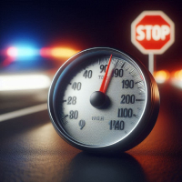
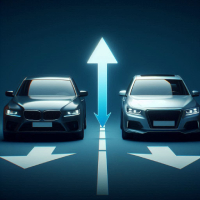
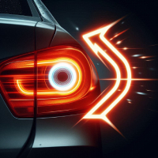
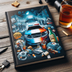

Sumário
Equipamentos de Segurança
A segurança no trânsito é um aspecto fundamental para a prevenção de acidentes e a proteção de vidas. Para alcançar esse objetivo, o desenvolvimento e a implementação de diversos equipamentos de segurança nos veículos têm se mostrado essenciais. Esses equipamentos, tanto ativos quanto passivos, desempenham um papel crucial na redução de acidentes e na minimização de lesões em caso de colisões. Desde tecnologias avançadas que ajudam a evitar acidentes até sistemas projetados para proteger os ocupantes durante impactos, os equipamentos de segurança no trânsito são a base para uma condução mais segura e consciente.
A segurança no trânsito depende de uma série de fatores, incluindo o comportamento dos motoristas, a infraestrutura das vias e, crucialmente, o uso adequado de equipamentos de segurança. Esses equipamentos são projetados para proteger os ocupantes dos veículos, reduzir a gravidade dos acidentes e aumentar a segurança geral nas estradas. Abaixo, discutiremos alguns dos principais equipamentos de segurança e dividiremos em dois subtópicos: equipamentos de segurança ativa e equipamentos de segurança passiva.
Equipamentos de Segurança Ativa
Os equipamentos de segurança ativa são aqueles que ajudam a evitar acidentes, atuando de forma preventiva. Eles estão integrados ao veículo para melhorar o controle e a estabilidade, bem como para alertar o motorista sobre situações de risco. Alguns dos principais equipamentos de segurança ativa incluem:
- Sistema de Frenagem Antibloqueio (ABS)
- Controle Eletrônico de Estabilidade (ESC)
- Assistente de Frenagem (BAS)
- Sistemas de Assistência ao Motorista (ADAS)
Equipamentos de Segurança Passiva
Os equipamentos de segurança passiva são projetados para proteger os ocupantes do veículo em caso de acidente, reduzindo a gravidade das lesões. Eles não evitam o acidente, mas minimizam seus efeitos. São exemplos:
- Cinto de segurança
- Airbags
- Encosto de cabeça
Dicas de Segurança
-

Respeite os Limites de Velocidade
Respeitar os limites de velocidade é crucial para evitar acidentes e garantir a segurança de todos.
-

Mantenha Distância Segura
Mantenha uma distância segura do veículo à sua frente para ter tempo de reagir a situações inesperadas.
-

Seja Visível e Sinalize suas Intenções
Use os indicadores de direção para sinalizar suas intenções aos outros motoristas e certifique-se de que seu veículo está visível, especialmente à noite.
Relate uma Experiência
Legislações
-
Código de Trânsito Brasileiro (CTB)
-

Lei Seca
-
Lei do Farol Baixo